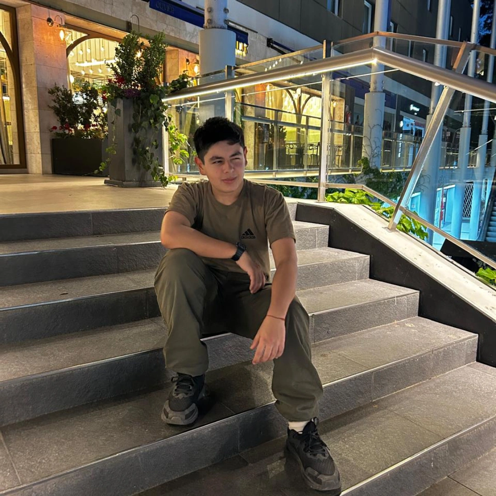

hola, soy Thiago Ferreyra Da rosa me encanta la ciencia y la tecnología
Página web hecha con HTML y CSS donde me presento y cuento mis gustos: los videojuegos, la pesca, el gym y mi perra Luna.
Ver proyecto →Juego interactivo de "elige tu propia aventura" hecho con HTML y CSS. Ayudás a un bebé T-Rex a volver a su nido, y según lo que elijas, ganás o te come un alosaurio.
Ver proyecto →Página hecha con HTML y CSS donde practico los enlaces: un menú con ancla interna, un link externo y un botón de contacto por correo.
Ver proyecto →Galería fotográfica hecha con HTML y CSS que exhibe 9 piezas paleontológicas, desde amonites y dientes de tiburón hasta esqueletos de mamut y tigre dientes de sable.
Ver proyecto →Interfaz adaptable hecha con HTML5 y Bootstrap 5 que incluye barra de navegación colapsable, tarjeta de producto (Máquina de Café) y formulario de inicio de sesión.
Ver proyecto →¿Quieres contactarme? Escríbeme a mi correo thiagoferreyradarosa@gmail.com, contáctame por teléfono al +54 9 11 5116-1650.